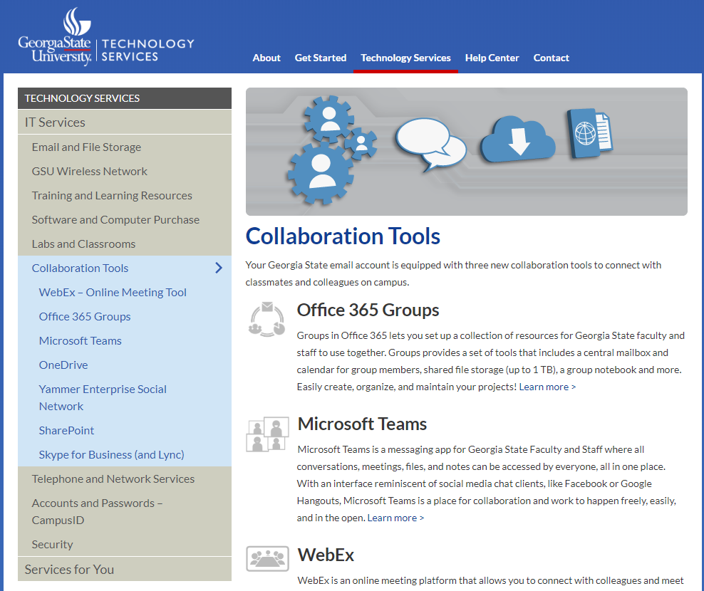
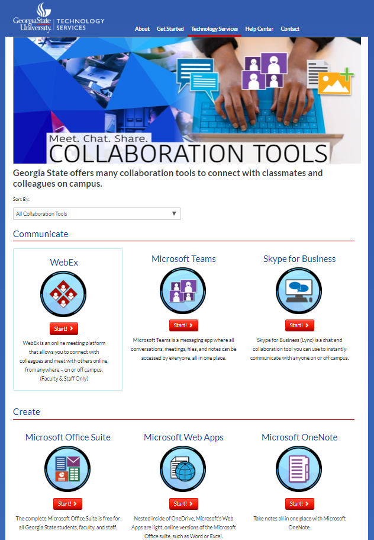

University Assistant in the Instructional Innovation and Technology Department
Tools used: WordPress, Illustrator, After Effects
Languages used: HTML, CSS
One of my bigger assignments was to redesign the Collaboration Tools page. With a growing library of new tools available, GSU wanted a fresh new page to serve as their hub.
The old layout:
With the help of a multimedia artist for the background images, I redesigned the page with a three column grid.
